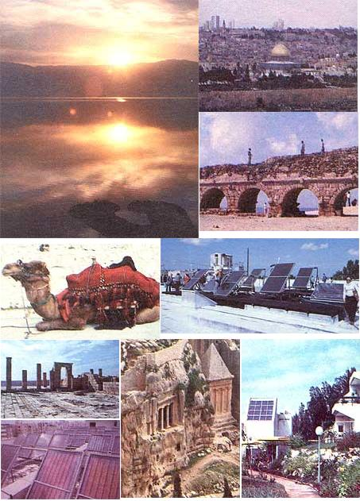

CLOCKWISE FROM TOP LEFT: A spectacular sunrise over the Dead Sea .... Sky scrapers tower above Jerusalem's Dome of the Rock .... This aqueduct once brought water to the Roman city of Caesarea .... The tour visited numerous solar manufacturers .... Integral solar houses at the Beth Hashita Kibbutz . . . . Ancient tombs in the Valley of Kidron . . . . Israel's largest commercial solar system, on a hotel in Netanya . . . . Nabatean ruins survive in the Negev desert .... A camel patiently waits outside the Garden of Gethsemane.